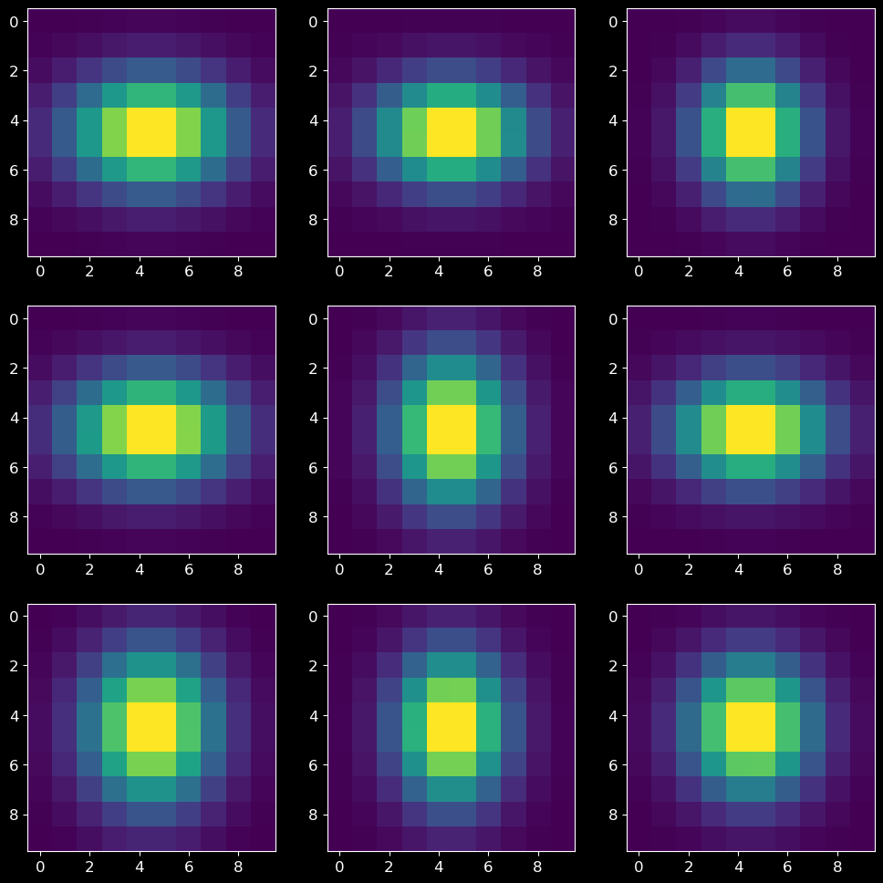
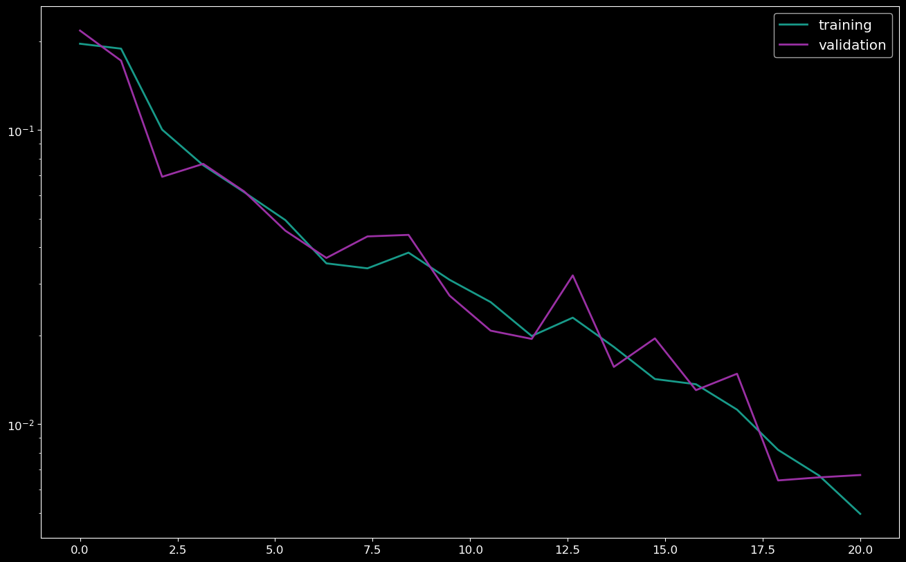
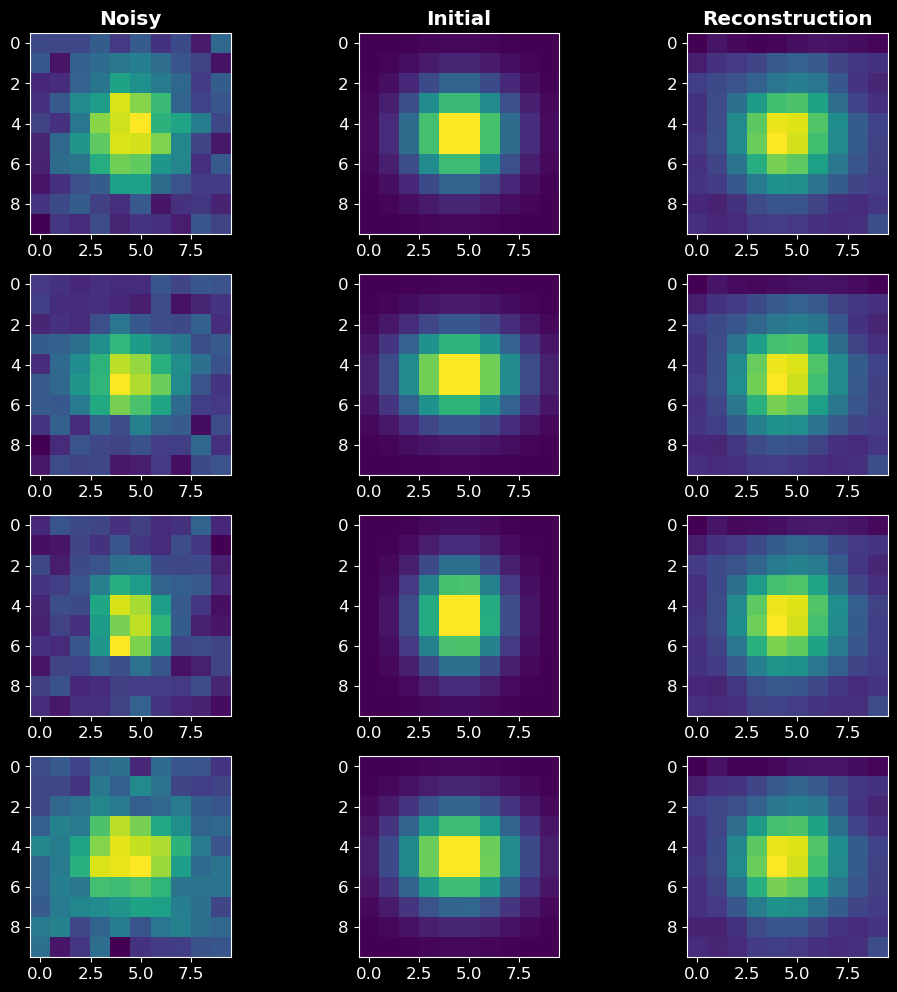

2D Gaussians¶
In this notebook, I will develop the framework to use a recurrent inference machine to solve a basic 1D deconvolution problem.
The problem: Given a 1D Gaussian profile convolved with Poisson noise, can we use and RIM to recover the original 1D Gaussian profile.
[1]:
import numpy as np
import matplotlib.pyplot as plt
import tensorflow as tf
from tensorflow import keras
from tensorflow.keras import layers
import time
import sys
sys.path.append("/home/carterrhea/Documents/astroRIM/") # Full path to AstroRIM module
from RIM_sequence import RIM
from RIM_model import RIM_Model_2D # Import name of architecture to use
from RIM_physical import calc_grad_standard_2D # Import name of gradient log likelihood
plt.style.use('dark.mplstyle')
2022-11-15 11:51:23.791505: I tensorflow/core/platform/cpu_feature_guard.cc:193] This TensorFlow binary is optimized with oneAPI Deep Neural Network Library (oneDNN) to use the following CPU instructions in performance-critical operations: SSE4.1 SSE4.2 AVX AVX2 AVX512F AVX512_VNNI FMA
To enable them in other operations, rebuild TensorFlow with the appropriate compiler flags.
2022-11-15 11:51:24.963748: I tensorflow/core/platform/cpu_feature_guard.cc:193] This TensorFlow binary is optimized with oneAPI Deep Neural Network Library (oneDNN) to use the following CPU instructions in performance-critical operations: SSE4.1 SSE4.2 AVX AVX2 AVX512F AVX512_VNNI FMA
To enable them in other operations, rebuild TensorFlow with the appropriate compiler flags.
2022-11-15 11:51:24.964590: I tensorflow/core/common_runtime/process_util.cc:146] Creating new thread pool with default inter op setting: 2. Tune using inter_op_parallelism_threads for best performance.
[2]:
n = 10 # Size of spectrum
N = 2000 # Number of spectra
Create Convolved Image¶
[3]:
def gaussian2D(A, x, y, mux, muy, sigx, sigy):
x_term = (x-mux)**2/ (2 *sigx**2.)
y_term = (y-muy)**2/ (2 *sigy**2.)
return A*np.exp(-(x_term+y_term))
def conv_mat(n):
"""
Create convolution matrix that is an identity matrix with noise
"""
conv_mat = np.eye(n)+np.random.normal(0, 0.05, (n,n))
return conv_mat
def create_convolved(N):
'''
Create convolved Gaussian that are 28x28
Args:
n - number of Gausians
Return:
gaussians - List of convolved Gaussians
'''
gaussians_initial = [] # List of initial Gaussians
powerlaw_conv = [] # List of Powerlaws used in convolution
gaussians_final = [] # List of final Gaussians after convolution
noise = [] # List of noises added
for i in range(N):
# Create original 2D Gaussian
x = np.linspace(-10,10,n)
y = np.linspace(-10,10,n)
x, y = np.meshgrid(x, y)
mux = np.random.uniform(0.001,.01)
muy = np.random.uniform(0.001,.01)
sigx = np.random.uniform(3,5)
sigy = np.random.uniform(3,5)
gaus_orig = gaussian2D(1, x, y, mux, muy, sigx, sigy)
gaussians_initial.append(gaus_orig)
# Convolve with additional Gaussian
conv_mat_ = conv_mat(n)
gaus_conv = conv_mat_@gaus_orig
# Add noise
noise_ = np.random.normal(0,0.1, (n, n))
gaus_noise = gaus_conv + noise_
gaussians_final.append(gaus_noise)
powerlaw_conv.append(conv_mat_)
noise.append(noise_)
return gaussians_initial,gaussians_final,powerlaw_conv,noise
# Create N instances
gaussians_initial, gaussians_final,powerlaw_conv,noise = create_convolved(N)
[17]:
# A quick look at the data
nrows = 3
ncols = 3
fig, axs = plt.subplots(nrows, ncols, figsize=(12,12))
for i in range(nrows):
for j in range(ncols):
test_index = int(np.random.uniform(0,N))
axs[i,j].imshow(gaussians_initial[test_index])

Recurrent Inference Machine¶
[5]:
# Create training, validation, and test sets
train_percentage = 0.7
valid_percentage = 0.9
test_percentage = 1.0
len_X = len(gaussians_initial)
# Training
X_train = gaussians_initial[:int(train_percentage*len_X)]
Y_train = gaussians_final[:int(train_percentage*len_X)]
A_train = powerlaw_conv[:int(train_percentage*len_X)]
N_train = noise[:int(train_percentage*len_X)]
#Validation
X_valid = gaussians_initial[int(train_percentage*len_X):int(valid_percentage*len_X)]
Y_valid = gaussians_final[int(train_percentage*len_X):int(valid_percentage*len_X)]
A_valid = powerlaw_conv[int(train_percentage*len_X):int(valid_percentage*len_X)]
N_valid = noise[int(train_percentage*len_X):int(valid_percentage*len_X)]
#Test
X_test = gaussians_initial[int(valid_percentage*len_X):]
Y_test = gaussians_final[int(valid_percentage*len_X):]
A_test = powerlaw_conv[int(valid_percentage*len_X):]
N_test = noise[int(valid_percentage*len_X):]
[6]:
# Initiate RIM architecture to use. We are using the standard RIM archtecture defined in `rim_model.py` as `RIM_Model_1D`.
rim_architecture = RIM_Model_2D(conv_filters=8, kernel_size=3, rnn_units=[128, 128])
# Load model and define hyper parameters
epochs = 20 # Number of epochs
batch_size = 8 # Batch size
learning_rate = 1e-2 # Initial learning rate
time_steps = 10 # Time steps
dimensions = 2 # Dimensions of the problem
learning_rate_function = 'step' # Type of learning rate function (options are: step, exponential, or linear)
model = RIM(rim_model=rim_architecture, gradient=calc_grad_standard_2D, input_size=n, dimensions=dimensions, t_steps=time_steps,
learning_rate=learning_rate, learning_rate_function=learning_rate_function)
# Prepare the training dataset
train_dataset = tf.data.Dataset.from_tensor_slices((X_train, Y_train, A_train, N_train))
train_dataset = train_dataset.batch(batch_size, drop_remainder=True)
train_dataset = train_dataset.prefetch(2)
# Prepare the validation dataset
val_dataset = tf.data.Dataset.from_tensor_slices((X_valid, Y_valid, A_valid, N_valid))
val_dataset = val_dataset.batch(batch_size, drop_remainder=True)
val_dataset = val_dataset.prefetch(2)
[7]:
# Fit model
ysol_valid, training_loss, valid_loss, learning_rates = model.fit(batch_size, epochs, train_dataset, val_dataset)
Training epoch: 1:: Completion: 0.00% ETA 01:27:10 loss: 7.322E-01 MSE: 7.325E-01
Training epoch: 1:: Completion: 5.71% ETA 00:04:14 loss: 2.889E-01 MSE: 2.056E+00
Training epoch: 1:: Completion: 11.43% ETA 00:04:33 loss: 2.555E-01 MSE: 1.195E+00
Training epoch: 1:: Completion: 17.14% ETA 00:05:04 loss: 2.024E-01 MSE: 8.583E-01
Training epoch: 1:: Completion: 22.86% ETA 00:04:54 loss: 1.937E-01 MSE: 7.057E-01
Training epoch: 1:: Completion: 28.57% ETA 00:03:24 loss: 2.007E-01 MSE: 6.019E-01
Training epoch: 1:: Completion: 34.29% ETA 00:03:39 loss: 1.946E-01 MSE: 5.325E-01
Training epoch: 1:: Completion: 40.00% ETA 00:02:35 loss: 2.027E-01 MSE: 4.818E-01
Training epoch: 1:: Completion: 45.71% ETA 00:02:25 loss: 2.015E-01 MSE: 4.446E-01
Training epoch: 1:: Completion: 51.43% ETA 00:03:19 loss: 2.003E-01 MSE: 4.157E-01
Training epoch: 1:: Completion: 57.14% ETA 00:01:58 loss: 2.041E-01 MSE: 3.924E-01
Training epoch: 1:: Completion: 62.86% ETA 00:01:39 loss: 1.954E-01 MSE: 3.739E-01
Training epoch: 1:: Completion: 68.57% ETA 00:02:11 loss: 1.993E-01 MSE: 3.565E-01
Training epoch: 1:: Completion: 74.29% ETA 00:01:19 loss: 1.958E-01 MSE: 3.440E-01
Training epoch: 1:: Completion: 80.00% ETA 00:01:16 loss: 2.015E-01 MSE: 3.313E-01
Training epoch: 1:: Completion: 85.71% ETA 00:00:49 loss: 2.025E-01 MSE: 3.215E-01
Training epoch: 1:: Completion: 91.43% ETA 00:00:24 loss: 1.973E-01 MSE: 3.134E-01
Training epoch: 1:: Completion: 97.14% ETA 00:00:09 loss: 1.996E-01 MSE: 3.048E-01
Validation epoch: 1:: Completion: 0.00% ETA: 00:17:12 train_loss: 1.966E-01 train_MSE: 3.026E-01 val_loss: 1.862E-01 val_MSE: 1.862E-01
Validation epoch: 1:: Completion: 5.71% ETA: 00:01:44 train_loss: 1.966E-01 train_MSE: 3.026E-01 val_loss: 1.729E-01 val_MSE: 1.799E-01
Validation epoch: 1:: Completion: 11.43% ETA: 00:02:04 train_loss: 1.966E-01 train_MSE: 3.026E-01 val_loss: 1.850E-01 val_MSE: 1.838E-01
Validation epoch: 1:: Completion: 17.14% ETA: 00:01:24 train_loss: 1.966E-01 train_MSE: 3.026E-01 val_loss: 1.880E-01 val_MSE: 1.828E-01
Validation epoch: 1:: Completion: 22.86% ETA: 00:01:20 train_loss: 1.966E-01 train_MSE: 3.026E-01 val_loss: 1.600E-01 val_MSE: 1.824E-01
Validation epoch: 1:: Completion: 100.00% ETA: 0 train_loss: 1.966E-01 train_MSE: 3.026E-01 val_loss: 2.180E-01 val_MSE: 1.839E-01
Training MSE: 0.3026
Validation MSE: 0.1839
Time taken on epoch: 00:06:27 seconds
Training epoch: 2:: Completion: 0.00% ETA 00:05:23 loss: 2.016E-01 MSE: 1.674E-01
Training epoch: 2:: Completion: 5.71% ETA 00:04:08 loss: 1.955E-01 MSE: 1.687E-01
Training epoch: 2:: Completion: 11.43% ETA 00:04:19 loss: 1.928E-01 MSE: 1.727E-01
Training epoch: 2:: Completion: 17.14% ETA 00:03:54 loss: 2.006E-01 MSE: 1.744E-01
Training epoch: 2:: Completion: 22.86% ETA 00:03:43 loss: 1.889E-01 MSE: 1.767E-01
Training epoch: 2:: Completion: 28.57% ETA 00:03:10 loss: 1.969E-01 MSE: 1.746E-01
Training epoch: 2:: Completion: 34.29% ETA 00:05:13 loss: 1.929E-01 MSE: 1.770E-01
Training epoch: 2:: Completion: 40.00% ETA 00:04:22 loss: 2.007E-01 MSE: 1.746E-01
Training epoch: 2:: Completion: 45.71% ETA 00:06:12 loss: 1.980E-01 MSE: 1.755E-01
Training epoch: 2:: Completion: 51.43% ETA 00:02:36 loss: 1.967E-01 MSE: 1.757E-01
Training epoch: 2:: Completion: 57.14% ETA 00:02:13 loss: 1.973E-01 MSE: 1.753E-01
Training epoch: 2:: Completion: 62.86% ETA 00:01:45 loss: 1.912E-01 MSE: 1.760E-01
Training epoch: 2:: Completion: 68.57% ETA 00:01:31 loss: 1.926E-01 MSE: 1.748E-01
Training epoch: 2:: Completion: 74.29% ETA 00:01:45 loss: 1.872E-01 MSE: 1.752E-01
Training epoch: 2:: Completion: 80.00% ETA 00:01:13 loss: 1.965E-01 MSE: 1.744E-01
Training epoch: 2:: Completion: 85.71% ETA 00:00:40 loss: 1.996E-01 MSE: 1.736E-01
Training epoch: 2:: Completion: 91.43% ETA 00:00:18 loss: 1.956E-01 MSE: 1.741E-01
Training epoch: 2:: Completion: 97.14% ETA 00:00:07 loss: 1.917E-01 MSE: 1.739E-01
Validation epoch: 2:: Completion: 0.00% ETA: 00:01:38 train_loss: 1.892E-01 train_MSE: 1.738E-01 val_loss: 1.502E-01 val_MSE: 1.502E-01
Validation epoch: 2:: Completion: 5.71% ETA: 00:01:24 train_loss: 1.892E-01 train_MSE: 1.738E-01 val_loss: 1.308E-01 val_MSE: 1.412E-01
Validation epoch: 2:: Completion: 11.43% ETA: 00:01:16 train_loss: 1.892E-01 train_MSE: 1.738E-01 val_loss: 1.467E-01 val_MSE: 1.436E-01
Validation epoch: 2:: Completion: 17.14% ETA: 00:01:03 train_loss: 1.892E-01 train_MSE: 1.738E-01 val_loss: 1.468E-01 val_MSE: 1.422E-01
Validation epoch: 2:: Completion: 22.86% ETA: 00:00:38 train_loss: 1.892E-01 train_MSE: 1.738E-01 val_loss: 1.287E-01 val_MSE: 1.420E-01
Validation epoch: 2:: Completion: 100.00% ETA: 0 train_loss: 1.892E-01 train_MSE: 1.738E-01 val_loss: 1.722E-01 val_MSE: 1.431E-01
Training MSE: 0.1738
Validation MSE: 0.1431
Time taken on epoch: 00:06:00 seconds
Training epoch: 3:: Completion: 0.00% ETA 00:05:36 loss: 1.944E-01 MSE: 1.296E-01
Training epoch: 3:: Completion: 5.71% ETA 00:03:48 loss: 1.862E-01 MSE: 1.642E-01
Training epoch: 3:: Completion: 11.43% ETA 00:03:39 loss: 1.826E-01 MSE: 1.632E-01
Training epoch: 3:: Completion: 17.14% ETA 00:05:57 loss: 1.943E-01 MSE: 1.621E-01
Training epoch: 3:: Completion: 22.86% ETA 00:03:08 loss: 1.755E-01 MSE: 1.651E-01
Training epoch: 3:: Completion: 28.57% ETA 00:03:34 loss: 1.795E-01 MSE: 1.618E-01
Training epoch: 3:: Completion: 34.29% ETA 00:02:43 loss: 1.784E-01 MSE: 1.636E-01
Training epoch: 3:: Completion: 40.00% ETA 00:04:02 loss: 1.860E-01 MSE: 1.608E-01
Training epoch: 3:: Completion: 45.71% ETA 00:03:06 loss: 1.712E-01 MSE: 1.619E-01
Training epoch: 3:: Completion: 51.43% ETA 00:03:03 loss: 1.666E-01 MSE: 1.604E-01
Training epoch: 3:: Completion: 57.14% ETA 00:02:22 loss: 1.847E-01 MSE: 1.584E-01
Training epoch: 3:: Completion: 62.86% ETA 00:02:28 loss: 1.560E-01 MSE: 1.555E-01
Training epoch: 3:: Completion: 68.57% ETA 00:01:35 loss: 1.618E-01 MSE: 1.561E-01
Training epoch: 3:: Completion: 74.29% ETA 00:01:32 loss: 1.531E-01 MSE: 1.550E-01
Training epoch: 3:: Completion: 80.00% ETA 00:01:21 loss: 1.387E-01 MSE: 1.509E-01
Training epoch: 3:: Completion: 85.71% ETA 00:00:41 loss: 1.297E-01 MSE: 1.470E-01
Training epoch: 3:: Completion: 91.43% ETA 00:00:24 loss: 1.163E-01 MSE: 1.434E-01
Training epoch: 3:: Completion: 97.14% ETA 00:00:07 loss: 1.062E-01 MSE: 1.404E-01
Validation epoch: 3:: Completion: 0.00% ETA: 00:02:39 train_loss: 1.004E-01 train_MSE: 1.388E-01 val_loss: 7.736E-02 val_MSE: 7.736E-02
Validation epoch: 3:: Completion: 5.71% ETA: 00:01:40 train_loss: 1.004E-01 train_MSE: 1.388E-01 val_loss: 7.461E-02 val_MSE: 7.507E-02
Validation epoch: 3:: Completion: 11.43% ETA: 00:01:09 train_loss: 1.004E-01 train_MSE: 1.388E-01 val_loss: 7.508E-02 val_MSE: 7.606E-02
Validation epoch: 3:: Completion: 17.14% ETA: 00:01:13 train_loss: 1.004E-01 train_MSE: 1.388E-01 val_loss: 8.181E-02 val_MSE: 7.609E-02
Validation epoch: 3:: Completion: 22.86% ETA: 00:01:12 train_loss: 1.004E-01 train_MSE: 1.388E-01 val_loss: 8.201E-02 val_MSE: 7.610E-02
Validation epoch: 3:: Completion: 100.00% ETA: 0 train_loss: 1.004E-01 train_MSE: 1.388E-01 val_loss: 6.938E-02 val_MSE: 7.553E-02
Training MSE: 0.1388
Validation MSE: 0.0755
Time taken on epoch: 00:05:55 seconds
Training epoch: 4:: Completion: 0.00% ETA 00:04:24 loss: 1.009E-01 MSE: 7.850E-02
Training epoch: 4:: Completion: 5.71% ETA 00:03:46 loss: 8.747E-02 MSE: 7.165E-02
Training epoch: 4:: Completion: 11.43% ETA 00:05:35 loss: 8.613E-02 MSE: 7.142E-02
Training epoch: 4:: Completion: 17.14% ETA 00:04:51 loss: 9.294E-02 MSE: 7.524E-02
Training epoch: 4:: Completion: 22.86% ETA 00:03:07 loss: 1.064E-01 MSE: 7.629E-02
Training epoch: 4:: Completion: 28.57% ETA 00:03:28 loss: 9.866E-02 MSE: 8.067E-02
Training epoch: 4:: Completion: 34.29% ETA 00:02:59 loss: 1.016E-01 MSE: 8.135E-02
Training epoch: 4:: Completion: 40.00% ETA 00:04:33 loss: 1.019E-01 MSE: 8.250E-02
Training epoch: 4:: Completion: 45.71% ETA 00:02:43 loss: 9.494E-02 MSE: 8.203E-02
Training epoch: 4:: Completion: 51.43% ETA 00:02:41 loss: 9.439E-02 MSE: 8.241E-02
Training epoch: 4:: Completion: 57.14% ETA 00:02:06 loss: 8.969E-02 MSE: 8.227E-02
Training epoch: 4:: Completion: 62.86% ETA 00:03:15 loss: 9.551E-02 MSE: 8.242E-02
Training epoch: 4:: Completion: 68.57% ETA 00:01:56 loss: 9.500E-02 MSE: 8.265E-02
Training epoch: 4:: Completion: 74.29% ETA 00:01:23 loss: 8.728E-02 MSE: 8.258E-02
Training epoch: 4:: Completion: 80.00% ETA 00:01:26 loss: 9.166E-02 MSE: 8.206E-02
Training epoch: 4:: Completion: 85.71% ETA 00:00:44 loss: 7.964E-02 MSE: 8.157E-02
Training epoch: 4:: Completion: 91.43% ETA 00:00:28 loss: 8.176E-02 MSE: 8.108E-02
Training epoch: 4:: Completion: 97.14% ETA 00:00:12 loss: 7.758E-02 MSE: 8.057E-02
Validation epoch: 4:: Completion: 0.00% ETA: 00:01:20 train_loss: 7.595E-02 train_MSE: 8.049E-02 val_loss: 8.673E-02 val_MSE: 8.673E-02
Validation epoch: 4:: Completion: 5.71% ETA: 00:01:17 train_loss: 7.595E-02 train_MSE: 8.049E-02 val_loss: 7.112E-02 val_MSE: 8.198E-02
Validation epoch: 4:: Completion: 11.43% ETA: 00:01:20 train_loss: 7.595E-02 train_MSE: 8.049E-02 val_loss: 7.227E-02 val_MSE: 8.034E-02
Validation epoch: 4:: Completion: 17.14% ETA: 00:01:06 train_loss: 7.595E-02 train_MSE: 8.049E-02 val_loss: 7.980E-02 val_MSE: 7.942E-02
Validation epoch: 4:: Completion: 22.86% ETA: 00:01:05 train_loss: 7.595E-02 train_MSE: 8.049E-02 val_loss: 8.819E-02 val_MSE: 7.908E-02
Validation epoch: 4:: Completion: 100.00% ETA: 0 train_loss: 7.595E-02 train_MSE: 8.049E-02 val_loss: 7.677E-02 val_MSE: 7.899E-02
Training MSE: 0.0805
Validation MSE: 0.0790
Time taken on epoch: 00:06:09 seconds
Training epoch: 5:: Completion: 0.00% ETA 00:05:45 loss: 8.690E-02 MSE: 8.170E-02
Training epoch: 5:: Completion: 5.71% ETA 00:05:31 loss: 8.821E-02 MSE: 7.872E-02
Training epoch: 5:: Completion: 11.43% ETA 00:04:21 loss: 9.348E-02 MSE: 7.657E-02
Training epoch: 5:: Completion: 17.14% ETA 00:05:43 loss: 9.191E-02 MSE: 7.982E-02
Training epoch: 5:: Completion: 22.86% ETA 00:05:17 loss: 8.666E-02 MSE: 7.833E-02
Training epoch: 5:: Completion: 28.57% ETA 00:03:57 loss: 7.740E-02 MSE: 7.665E-02
Training epoch: 5:: Completion: 34.29% ETA 00:03:38 loss: 8.372E-02 MSE: 7.622E-02
Training epoch: 5:: Completion: 40.00% ETA 00:03:25 loss: 7.372E-02 MSE: 7.499E-02
Training epoch: 5:: Completion: 45.71% ETA 00:03:16 loss: 7.416E-02 MSE: 7.467E-02
Training epoch: 5:: Completion: 51.43% ETA 00:03:39 loss: 6.872E-02 MSE: 7.367E-02
Training epoch: 5:: Completion: 57.14% ETA 00:02:48 loss: 7.356E-02 MSE: 7.293E-02
Training epoch: 5:: Completion: 62.86% ETA 00:02:13 loss: 7.226E-02 MSE: 7.199E-02
Training epoch: 5:: Completion: 68.57% ETA 00:01:33 loss: 7.811E-02 MSE: 7.105E-02
Training epoch: 5:: Completion: 74.29% ETA 00:01:19 loss: 6.529E-02 MSE: 7.029E-02
Training epoch: 5:: Completion: 80.00% ETA 00:01:17 loss: 7.231E-02 MSE: 6.970E-02
Training epoch: 5:: Completion: 85.71% ETA 00:00:43 loss: 7.290E-02 MSE: 6.918E-02
Training epoch: 5:: Completion: 91.43% ETA 00:00:31 loss: 7.415E-02 MSE: 6.938E-02
Training epoch: 5:: Completion: 97.14% ETA 00:00:08 loss: 7.245E-02 MSE: 6.930E-02
Validation epoch: 5:: Completion: 0.00% ETA: 00:01:55 train_loss: 6.148E-02 train_MSE: 6.910E-02 val_loss: 6.318E-02 val_MSE: 6.318E-02
Validation epoch: 5:: Completion: 5.71% ETA: 00:01:43 train_loss: 6.148E-02 train_MSE: 6.910E-02 val_loss: 5.038E-02 val_MSE: 5.345E-02
Validation epoch: 5:: Completion: 11.43% ETA: 00:02:23 train_loss: 6.148E-02 train_MSE: 6.910E-02 val_loss: 5.661E-02 val_MSE: 5.406E-02
Validation epoch: 5:: Completion: 17.14% ETA: 00:01:28 train_loss: 6.148E-02 train_MSE: 6.910E-02 val_loss: 5.571E-02 val_MSE: 5.338E-02
Validation epoch: 5:: Completion: 22.86% ETA: 00:01:08 train_loss: 6.148E-02 train_MSE: 6.910E-02 val_loss: 5.259E-02 val_MSE: 5.326E-02
Validation epoch: 5:: Completion: 100.00% ETA: 0 train_loss: 6.148E-02 train_MSE: 6.910E-02 val_loss: 6.182E-02 val_MSE: 5.359E-02
Training MSE: 0.0691
Validation MSE: 0.0536
Time taken on epoch: 00:06:27 seconds
Training epoch: 6:: Completion: 0.00% ETA 00:05:47 loss: 6.888E-02 MSE: 4.850E-02
Training epoch: 6:: Completion: 5.71% ETA 00:05:34 loss: 6.327E-02 MSE: 5.411E-02
Training epoch: 6:: Completion: 11.43% ETA 00:06:22 loss: 6.031E-02 MSE: 5.566E-02
Training epoch: 6:: Completion: 17.14% ETA 00:04:10 loss: 6.859E-02 MSE: 5.815E-02
Training epoch: 6:: Completion: 22.86% ETA 00:07:07 loss: 6.750E-02 MSE: 5.772E-02
Training epoch: 6:: Completion: 28.57% ETA 00:05:15 loss: 6.535E-02 MSE: 5.782E-02
Training epoch: 6:: Completion: 34.29% ETA 00:04:04 loss: 6.236E-02 MSE: 5.754E-02
Training epoch: 6:: Completion: 40.00% ETA 00:03:42 loss: 8.406E-02 MSE: 6.022E-02
Training epoch: 6:: Completion: 45.71% ETA 00:02:56 loss: 7.933E-02 MSE: 6.134E-02
Training epoch: 6:: Completion: 51.43% ETA 00:03:58 loss: 6.525E-02 MSE: 6.106E-02
Training epoch: 6:: Completion: 57.14% ETA 00:03:06 loss: 6.229E-02 MSE: 6.071E-02
Training epoch: 6:: Completion: 62.86% ETA 00:02:10 loss: 6.108E-02 MSE: 6.008E-02
Training epoch: 6:: Completion: 68.57% ETA 00:01:42 loss: 6.382E-02 MSE: 5.899E-02
Training epoch: 6:: Completion: 74.29% ETA 00:01:42 loss: 6.933E-02 MSE: 5.860E-02
Training epoch: 6:: Completion: 80.00% ETA 00:01:15 loss: 5.686E-02 MSE: 5.798E-02
Training epoch: 6:: Completion: 85.71% ETA 00:01:05 loss: 5.788E-02 MSE: 5.721E-02
Training epoch: 6:: Completion: 91.43% ETA 00:00:30 loss: 7.863E-02 MSE: 5.672E-02
Training epoch: 6:: Completion: 97.14% ETA 00:00:09 loss: 6.453E-02 MSE: 5.665E-02
Validation epoch: 6:: Completion: 0.00% ETA: 00:01:57 train_loss: 4.943E-02 train_MSE: 5.627E-02 val_loss: 4.260E-02 val_MSE: 4.260E-02
Validation epoch: 6:: Completion: 5.71% ETA: 00:01:28 train_loss: 4.943E-02 train_MSE: 5.627E-02 val_loss: 3.614E-02 val_MSE: 3.991E-02
Validation epoch: 6:: Completion: 11.43% ETA: 00:01:16 train_loss: 4.943E-02 train_MSE: 5.627E-02 val_loss: 4.437E-02 val_MSE: 4.169E-02
Validation epoch: 6:: Completion: 17.14% ETA: 00:01:19 train_loss: 4.943E-02 train_MSE: 5.627E-02 val_loss: 4.296E-02 val_MSE: 4.116E-02
Validation epoch: 6:: Completion: 22.86% ETA: 00:01:05 train_loss: 4.943E-02 train_MSE: 5.627E-02 val_loss: 4.390E-02 val_MSE: 4.091E-02
Validation epoch: 6:: Completion: 100.00% ETA: 0 train_loss: 4.943E-02 train_MSE: 5.627E-02 val_loss: 4.550E-02 val_MSE: 4.091E-02
Training MSE: 0.0563
Validation MSE: 0.0409
Time taken on epoch: 00:07:24 seconds
Training epoch: 7:: Completion: 0.00% ETA 00:06:18 loss: 5.443E-02 MSE: 3.884E-02
Training epoch: 7:: Completion: 5.71% ETA 00:05:59 loss: 5.009E-02 MSE: 4.175E-02
Training epoch: 7:: Completion: 11.43% ETA 00:06:55 loss: 8.065E-02 MSE: 4.320E-02
Training epoch: 7:: Completion: 17.14% ETA 00:04:38 loss: 5.087E-02 MSE: 4.144E-02
Training epoch: 7:: Completion: 22.86% ETA 00:04:41 loss: 4.859E-02 MSE: 3.981E-02
Training epoch: 7:: Completion: 28.57% ETA 00:04:07 loss: 4.436E-02 MSE: 3.995E-02
Training epoch: 7:: Completion: 34.29% ETA 00:04:17 loss: 5.156E-02 MSE: 4.011E-02
Training epoch: 7:: Completion: 40.00% ETA 00:03:50 loss: 8.176E-02 MSE: 4.171E-02
Training epoch: 7:: Completion: 45.71% ETA 00:03:30 loss: 5.390E-02 MSE: 4.325E-02
Training epoch: 7:: Completion: 51.43% ETA 00:03:28 loss: 4.639E-02 MSE: 4.286E-02
Training epoch: 7:: Completion: 57.14% ETA 00:03:03 loss: 3.864E-02 MSE: 4.240E-02
Training epoch: 7:: Completion: 62.86% ETA 00:02:15 loss: 4.032E-02 MSE: 4.134E-02
Training epoch: 7:: Completion: 68.57% ETA 00:01:57 loss: 4.634E-02 MSE: 4.032E-02
Training epoch: 7:: Completion: 74.29% ETA 00:01:41 loss: 4.268E-02 MSE: 3.936E-02
Training epoch: 7:: Completion: 80.00% ETA 00:01:20 loss: 6.639E-02 MSE: 3.981E-02
Training epoch: 7:: Completion: 85.71% ETA 00:00:58 loss: 5.016E-02 MSE: 3.967E-02
Training epoch: 7:: Completion: 91.43% ETA 00:00:32 loss: 4.091E-02 MSE: 3.948E-02
Training epoch: 7:: Completion: 97.14% ETA 00:00:10 loss: 4.940E-02 MSE: 3.917E-02
Validation epoch: 7:: Completion: 0.00% ETA: 00:01:47 train_loss: 3.523E-02 train_MSE: 3.901E-02 val_loss: 3.131E-02 val_MSE: 3.131E-02
Validation epoch: 7:: Completion: 5.71% ETA: 00:01:35 train_loss: 3.523E-02 train_MSE: 3.901E-02 val_loss: 2.816E-02 val_MSE: 2.849E-02
Validation epoch: 7:: Completion: 11.43% ETA: 00:01:42 train_loss: 3.523E-02 train_MSE: 3.901E-02 val_loss: 3.204E-02 val_MSE: 2.983E-02
Validation epoch: 7:: Completion: 17.14% ETA: 00:01:24 train_loss: 3.523E-02 train_MSE: 3.901E-02 val_loss: 3.211E-02 val_MSE: 2.960E-02
Validation epoch: 7:: Completion: 22.86% ETA: 00:01:21 train_loss: 3.523E-02 train_MSE: 3.901E-02 val_loss: 2.864E-02 val_MSE: 2.956E-02
Validation epoch: 7:: Completion: 100.00% ETA: 0 train_loss: 3.523E-02 train_MSE: 3.901E-02 val_loss: 3.676E-02 val_MSE: 2.984E-02
Training MSE: 0.0390
Validation MSE: 0.0298
Time taken on epoch: 00:07:14 seconds
Training epoch: 8:: Completion: 0.00% ETA 00:08:08 loss: 3.999E-02 MSE: 2.487E-02
Training epoch: 8:: Completion: 5.71% ETA 00:06:11 loss: 5.342E-02 MSE: 2.955E-02
Training epoch: 8:: Completion: 11.43% ETA 00:05:55 loss: 3.879E-02 MSE: 2.997E-02
Training epoch: 8:: Completion: 17.14% ETA 00:06:15 loss: 4.791E-02 MSE: 3.010E-02
Training epoch: 8:: Completion: 22.86% ETA 00:04:45 loss: 3.461E-02 MSE: 3.078E-02
Training epoch: 8:: Completion: 28.57% ETA 00:05:02 loss: 3.516E-02 MSE: 2.975E-02
Training epoch: 8:: Completion: 34.29% ETA 00:03:58 loss: 5.711E-02 MSE: 2.943E-02
Training epoch: 8:: Completion: 40.00% ETA 00:03:19 loss: 3.831E-02 MSE: 3.064E-02
Training epoch: 8:: Completion: 45.71% ETA 00:03:33 loss: 4.072E-02 MSE: 3.085E-02
Training epoch: 8:: Completion: 51.43% ETA 00:03:09 loss: 4.920E-02 MSE: 3.086E-02
Training epoch: 8:: Completion: 57.14% ETA 00:03:06 loss: 3.963E-02 MSE: 3.100E-02
Training epoch: 8:: Completion: 62.86% ETA 00:02:48 loss: 5.566E-02 MSE: 3.175E-02
Training epoch: 8:: Completion: 68.57% ETA 00:01:43 loss: 4.142E-02 MSE: 3.160E-02
Training epoch: 8:: Completion: 74.29% ETA 00:01:39 loss: 3.496E-02 MSE: 3.135E-02
Training epoch: 8:: Completion: 80.00% ETA 00:01:11 loss: 4.080E-02 MSE: 3.186E-02
Training epoch: 8:: Completion: 85.71% ETA 00:00:53 loss: 5.349E-02 MSE: 3.198E-02
Training epoch: 8:: Completion: 91.43% ETA 00:00:35 loss: 3.794E-02 MSE: 3.239E-02
Training epoch: 8:: Completion: 97.14% ETA 00:00:15 loss: 4.808E-02 MSE: 3.241E-02
Validation epoch: 8:: Completion: 0.00% ETA: 00:01:14 train_loss: 3.388E-02 train_MSE: 3.230E-02 val_loss: 3.469E-02 val_MSE: 3.469E-02
Validation epoch: 8:: Completion: 5.71% ETA: 00:01:17 train_loss: 3.388E-02 train_MSE: 3.230E-02 val_loss: 3.163E-02 val_MSE: 3.296E-02
Validation epoch: 8:: Completion: 11.43% ETA: 00:01:04 train_loss: 3.388E-02 train_MSE: 3.230E-02 val_loss: 3.564E-02 val_MSE: 3.397E-02
Validation epoch: 8:: Completion: 17.14% ETA: 00:00:49 train_loss: 3.388E-02 train_MSE: 3.230E-02 val_loss: 3.857E-02 val_MSE: 3.308E-02
Validation epoch: 8:: Completion: 22.86% ETA: 00:00:46 train_loss: 3.388E-02 train_MSE: 3.230E-02 val_loss: 2.922E-02 val_MSE: 3.316E-02
Validation epoch: 8:: Completion: 100.00% ETA: 0 train_loss: 3.388E-02 train_MSE: 3.230E-02 val_loss: 4.350E-02 val_MSE: 3.364E-02
Training MSE: 0.0323
Validation MSE: 0.0336
Time taken on epoch: 00:06:54 seconds
Training epoch: 9:: Completion: 0.00% ETA 00:05:00 loss: 3.942E-02 MSE: 2.790E-02
Training epoch: 9:: Completion: 5.71% ETA 00:04:28 loss: 3.836E-02 MSE: 2.753E-02
Training epoch: 9:: Completion: 11.43% ETA 00:02:54 loss: 4.354E-02 MSE: 2.583E-02
Training epoch: 9:: Completion: 17.14% ETA 00:04:10 loss: 3.570E-02 MSE: 2.481E-02
Training epoch: 9:: Completion: 22.86% ETA 00:03:16 loss: 6.557E-02 MSE: 2.654E-02
Training epoch: 9:: Completion: 28.57% ETA 00:03:15 loss: 3.739E-02 MSE: 2.734E-02
Training epoch: 9:: Completion: 34.29% ETA 00:02:59 loss: 4.287E-02 MSE: 2.690E-02
Training epoch: 9:: Completion: 40.00% ETA 00:02:30 loss: 4.026E-02 MSE: 2.906E-02
Training epoch: 9:: Completion: 45.71% ETA 00:02:39 loss: 4.363E-02 MSE: 2.941E-02
Training epoch: 9:: Completion: 51.43% ETA 00:02:08 loss: 3.930E-02 MSE: 2.885E-02
Training epoch: 9:: Completion: 57.14% ETA 00:01:56 loss: 3.509E-02 MSE: 2.850E-02
Training epoch: 9:: Completion: 62.86% ETA 00:01:36 loss: 4.424E-02 MSE: 2.882E-02
Training epoch: 9:: Completion: 68.57% ETA 00:01:22 loss: 4.152E-02 MSE: 2.843E-02
Training epoch: 9:: Completion: 74.29% ETA 00:01:09 loss: 4.049E-02 MSE: 2.818E-02
Training epoch: 9:: Completion: 80.00% ETA 00:00:51 loss: 3.292E-02 MSE: 2.786E-02
Training epoch: 9:: Completion: 85.71% ETA 00:00:37 loss: 3.207E-02 MSE: 2.741E-02
Training epoch: 9:: Completion: 91.43% ETA 00:00:22 loss: 3.408E-02 MSE: 2.720E-02
Training epoch: 9:: Completion: 97.14% ETA 00:00:08 loss: 4.112E-02 MSE: 2.713E-02
Validation epoch: 9:: Completion: 0.00% ETA: 00:01:11 train_loss: 3.832E-02 train_MSE: 2.715E-02 val_loss: 3.543E-02 val_MSE: 3.543E-02
Validation epoch: 9:: Completion: 5.71% ETA: 00:00:54 train_loss: 3.832E-02 train_MSE: 2.715E-02 val_loss: 3.023E-02 val_MSE: 3.190E-02
Validation epoch: 9:: Completion: 11.43% ETA: 00:00:51 train_loss: 3.832E-02 train_MSE: 2.715E-02 val_loss: 3.313E-02 val_MSE: 3.338E-02
Validation epoch: 9:: Completion: 17.14% ETA: 00:00:55 train_loss: 3.832E-02 train_MSE: 2.715E-02 val_loss: 3.530E-02 val_MSE: 3.240E-02
Validation epoch: 9:: Completion: 22.86% ETA: 00:00:57 train_loss: 3.832E-02 train_MSE: 2.715E-02 val_loss: 2.621E-02 val_MSE: 3.237E-02
Validation epoch: 9:: Completion: 100.00% ETA: 0 train_loss: 3.832E-02 train_MSE: 2.715E-02 val_loss: 4.403E-02 val_MSE: 3.292E-02
Training MSE: 0.0272
Validation MSE: 0.0329
Time taken on epoch: 00:05:03 seconds
Training epoch: 10:: Completion: 0.00% ETA 00:04:45 loss: 3.467E-02 MSE: 2.649E-02
Training epoch: 10:: Completion: 5.71% ETA 00:04:27 loss: 2.842E-02 MSE: 2.429E-02
Training epoch: 10:: Completion: 11.43% ETA 00:03:48 loss: 4.195E-02 MSE: 2.354E-02
Training epoch: 10:: Completion: 17.14% ETA 00:03:22 loss: 3.416E-02 MSE: 2.557E-02
Training epoch: 10:: Completion: 22.86% ETA 00:03:29 loss: 2.884E-02 MSE: 2.492E-02
Training epoch: 10:: Completion: 28.57% ETA 00:03:12 loss: 2.988E-02 MSE: 2.325E-02
Training epoch: 10:: Completion: 34.29% ETA 00:02:25 loss: 2.785E-02 MSE: 2.265E-02
Training epoch: 10:: Completion: 40.00% ETA 00:02:44 loss: 4.203E-02 MSE: 2.225E-02
Training epoch: 10:: Completion: 45.71% ETA 00:02:20 loss: 2.973E-02 MSE: 2.187E-02
Training epoch: 10:: Completion: 51.43% ETA 00:02:18 loss: 3.437E-02 MSE: 2.248E-02
Training epoch: 10:: Completion: 57.14% ETA 00:02:14 loss: 3.050E-02 MSE: 2.187E-02
Training epoch: 10:: Completion: 62.86% ETA 00:01:42 loss: 3.287E-02 MSE: 2.168E-02
Training epoch: 10:: Completion: 68.57% ETA 00:01:33 loss: 3.707E-02 MSE: 2.220E-02
Training epoch: 10:: Completion: 74.29% ETA 00:01:11 loss: 2.858E-02 MSE: 2.192E-02
Training epoch: 10:: Completion: 80.00% ETA 00:01:02 loss: 4.497E-02 MSE: 2.209E-02
Training epoch: 10:: Completion: 85.71% ETA 00:00:34 loss: 3.376E-02 MSE: 2.227E-02
Training epoch: 10:: Completion: 91.43% ETA 00:00:23 loss: 3.923E-02 MSE: 2.229E-02
Training epoch: 10:: Completion: 97.14% ETA 00:00:07 loss: 3.655E-02 MSE: 2.226E-02
Validation epoch: 10:: Completion: 0.00% ETA: 00:01:24 train_loss: 3.097E-02 train_MSE: 2.229E-02 val_loss: 2.417E-02 val_MSE: 2.417E-02
Validation epoch: 10:: Completion: 5.71% ETA: 00:00:56 train_loss: 3.097E-02 train_MSE: 2.229E-02 val_loss: 2.330E-02 val_MSE: 2.184E-02
Validation epoch: 10:: Completion: 11.43% ETA: 00:00:51 train_loss: 3.097E-02 train_MSE: 2.229E-02 val_loss: 2.526E-02 val_MSE: 2.329E-02
Validation epoch: 10:: Completion: 17.14% ETA: 00:00:51 train_loss: 3.097E-02 train_MSE: 2.229E-02 val_loss: 2.402E-02 val_MSE: 2.245E-02
Validation epoch: 10:: Completion: 22.86% ETA: 00:00:44 train_loss: 3.097E-02 train_MSE: 2.229E-02 val_loss: 1.967E-02 val_MSE: 2.224E-02
Validation epoch: 10:: Completion: 100.00% ETA: 0 train_loss: 3.097E-02 train_MSE: 2.229E-02 val_loss: 2.737E-02 val_MSE: 2.265E-02
Training MSE: 0.0223
Validation MSE: 0.0226
Time taken on epoch: 00:04:59 seconds
Training epoch: 11:: Completion: 0.00% ETA 00:05:06 loss: 3.030E-02 MSE: 1.806E-02
Training epoch: 11:: Completion: 5.71% ETA 00:04:20 loss: 3.358E-02 MSE: 2.778E-02
Training epoch: 11:: Completion: 11.43% ETA 00:03:43 loss: 3.444E-02 MSE: 2.391E-02
Training epoch: 11:: Completion: 17.14% ETA 00:06:13 loss: 3.102E-02 MSE: 2.264E-02
Training epoch: 11:: Completion: 22.86% ETA 00:06:52 loss: 2.696E-02 MSE: 2.196E-02
Training epoch: 11:: Completion: 28.57% ETA 00:04:29 loss: 2.525E-02 MSE: 2.024E-02
Training epoch: 11:: Completion: 34.29% ETA 00:04:21 loss: 2.706E-02 MSE: 1.923E-02
Training epoch: 11:: Completion: 40.00% ETA 00:03:07 loss: 2.952E-02 MSE: 1.933E-02
Training epoch: 11:: Completion: 45.71% ETA 00:02:55 loss: 2.651E-02 MSE: 1.864E-02
Training epoch: 11:: Completion: 51.43% ETA 00:02:27 loss: 2.688E-02 MSE: 1.854E-02
Training epoch: 11:: Completion: 57.14% ETA 00:02:57 loss: 2.723E-02 MSE: 1.835E-02
Training epoch: 11:: Completion: 62.86% ETA 00:02:11 loss: 2.614E-02 MSE: 1.798E-02
Training epoch: 11:: Completion: 68.57% ETA 00:01:57 loss: 2.974E-02 MSE: 1.795E-02
Training epoch: 11:: Completion: 74.29% ETA 00:01:21 loss: 5.143E-02 MSE: 1.878E-02
Training epoch: 11:: Completion: 80.00% ETA 00:01:05 loss: 3.326E-02 MSE: 1.928E-02
Training epoch: 11:: Completion: 85.71% ETA 00:00:37 loss: 2.513E-02 MSE: 1.948E-02
Training epoch: 11:: Completion: 91.43% ETA 00:00:24 loss: 2.388E-02 MSE: 1.911E-02
Training epoch: 11:: Completion: 97.14% ETA 00:00:13 loss: 2.936E-02 MSE: 1.878E-02
Validation epoch: 11:: Completion: 0.00% ETA: 00:02:03 train_loss: 2.601E-02 train_MSE: 1.867E-02 val_loss: 1.501E-02 val_MSE: 1.501E-02
Validation epoch: 11:: Completion: 5.71% ETA: 00:01:22 train_loss: 2.601E-02 train_MSE: 1.867E-02 val_loss: 1.297E-02 val_MSE: 1.342E-02
Validation epoch: 11:: Completion: 11.43% ETA: 00:01:26 train_loss: 2.601E-02 train_MSE: 1.867E-02 val_loss: 1.508E-02 val_MSE: 1.445E-02
Validation epoch: 11:: Completion: 17.14% ETA: 00:01:27 train_loss: 2.601E-02 train_MSE: 1.867E-02 val_loss: 1.661E-02 val_MSE: 1.400E-02
Validation epoch: 11:: Completion: 22.86% ETA: 00:01:18 train_loss: 2.601E-02 train_MSE: 1.867E-02 val_loss: 1.028E-02 val_MSE: 1.397E-02
Validation epoch: 11:: Completion: 100.00% ETA: 0 train_loss: 2.601E-02 train_MSE: 1.867E-02 val_loss: 2.080E-02 val_MSE: 1.436E-02
Training MSE: 0.0187
Validation MSE: 0.0144
Time taken on epoch: 00:06:25 seconds
Training epoch: 12:: Completion: 0.00% ETA 00:07:13 loss: 2.343E-02 MSE: 1.004E-02
Training epoch: 12:: Completion: 5.71% ETA 00:05:33 loss: 2.287E-02 MSE: 1.100E-02
Training epoch: 12:: Completion: 11.43% ETA 00:05:26 loss: 2.140E-02 MSE: 1.131E-02
Training epoch: 12:: Completion: 17.14% ETA 00:06:52 loss: 2.488E-02 MSE: 1.063E-02
Training epoch: 12:: Completion: 22.86% ETA 00:04:39 loss: 2.464E-02 MSE: 1.025E-02
Training epoch: 12:: Completion: 28.57% ETA 00:03:40 loss: 2.204E-02 MSE: 1.005E-02
Training epoch: 12:: Completion: 34.29% ETA 00:04:44 loss: 2.178E-02 MSE: 1.005E-02
Training epoch: 12:: Completion: 40.00% ETA 00:02:48 loss: 2.282E-02 MSE: 1.020E-02
Training epoch: 12:: Completion: 45.71% ETA 00:03:22 loss: 2.206E-02 MSE: 1.033E-02
Training epoch: 12:: Completion: 51.43% ETA 00:02:43 loss: 2.127E-02 MSE: 1.024E-02
Training epoch: 12:: Completion: 57.14% ETA 00:03:16 loss: 2.030E-02 MSE: 1.002E-02
Training epoch: 12:: Completion: 62.86% ETA 00:02:14 loss: 2.157E-02 MSE: 1.008E-02
Training epoch: 12:: Completion: 68.57% ETA 00:01:40 loss: 2.676E-02 MSE: 1.037E-02
Training epoch: 12:: Completion: 74.29% ETA 00:01:22 loss: 2.442E-02 MSE: 1.069E-02
Training epoch: 12:: Completion: 80.00% ETA 00:00:52 loss: 1.980E-02 MSE: 1.060E-02
Training epoch: 12:: Completion: 85.71% ETA 00:00:42 loss: 2.015E-02 MSE: 1.054E-02
Training epoch: 12:: Completion: 91.43% ETA 00:00:37 loss: 1.904E-02 MSE: 1.049E-02
Training epoch: 12:: Completion: 97.14% ETA 00:00:12 loss: 2.292E-02 MSE: 1.042E-02
Validation epoch: 12:: Completion: 0.00% ETA: 00:01:31 train_loss: 1.995E-02 train_MSE: 1.046E-02 val_loss: 1.410E-02 val_MSE: 1.410E-02
Validation epoch: 12:: Completion: 5.71% ETA: 00:01:35 train_loss: 1.995E-02 train_MSE: 1.046E-02 val_loss: 1.267E-02 val_MSE: 1.323E-02
Validation epoch: 12:: Completion: 11.43% ETA: 00:01:21 train_loss: 1.995E-02 train_MSE: 1.046E-02 val_loss: 1.296E-02 val_MSE: 1.398E-02
Validation epoch: 12:: Completion: 17.14% ETA: 00:01:32 train_loss: 1.995E-02 train_MSE: 1.046E-02 val_loss: 1.416E-02 val_MSE: 1.347E-02
Validation epoch: 12:: Completion: 22.86% ETA: 00:01:23 train_loss: 1.995E-02 train_MSE: 1.046E-02 val_loss: 9.208E-03 val_MSE: 1.341E-02
Validation epoch: 12:: Completion: 100.00% ETA: 0 train_loss: 1.995E-02 train_MSE: 1.046E-02 val_loss: 1.950E-02 val_MSE: 1.373E-02
Training MSE: 0.0105
Validation MSE: 0.0137
Time taken on epoch: 00:06:53 seconds
Training epoch: 13:: Completion: 0.00% ETA 00:06:32 loss: 1.929E-02 MSE: 9.516E-03
Training epoch: 13:: Completion: 5.71% ETA 00:04:44 loss: 1.804E-02 MSE: 9.395E-03
Training epoch: 13:: Completion: 11.43% ETA 00:04:56 loss: 2.096E-02 MSE: 9.030E-03
Training epoch: 13:: Completion: 17.14% ETA 00:04:28 loss: 1.827E-02 MSE: 9.113E-03
Training epoch: 13:: Completion: 22.86% ETA 00:03:52 loss: 1.719E-02 MSE: 9.388E-03
Training epoch: 13:: Completion: 28.57% ETA 00:03:40 loss: 1.704E-02 MSE: 9.070E-03
Training epoch: 13:: Completion: 34.29% ETA 00:04:08 loss: 1.718E-02 MSE: 8.795E-03
Training epoch: 13:: Completion: 40.00% ETA 00:03:06 loss: 1.829E-02 MSE: 9.202E-03
Training epoch: 13:: Completion: 45.71% ETA 00:02:45 loss: 1.771E-02 MSE: 9.207E-03
Training epoch: 13:: Completion: 51.43% ETA 00:02:29 loss: 2.020E-02 MSE: 9.620E-03
Training epoch: 13:: Completion: 57.14% ETA 00:02:13 loss: 1.802E-02 MSE: 9.848E-03
Training epoch: 13:: Completion: 62.86% ETA 00:02:05 loss: 2.136E-02 MSE: 9.905E-03
Training epoch: 13:: Completion: 68.57% ETA 00:01:39 loss: 1.831E-02 MSE: 1.004E-02
Training epoch: 13:: Completion: 74.29% ETA 00:01:20 loss: 1.885E-02 MSE: 1.001E-02
Training epoch: 13:: Completion: 80.00% ETA 00:01:04 loss: 1.929E-02 MSE: 1.029E-02
Training epoch: 13:: Completion: 85.71% ETA 00:00:50 loss: 1.703E-02 MSE: 1.038E-02
Training epoch: 13:: Completion: 91.43% ETA 00:00:26 loss: 1.813E-02 MSE: 1.034E-02
Training epoch: 13:: Completion: 97.14% ETA 00:00:10 loss: 3.282E-02 MSE: 1.054E-02
Validation epoch: 13:: Completion: 0.00% ETA: 00:01:32 train_loss: 2.303E-02 train_MSE: 1.074E-02 val_loss: 2.585E-02 val_MSE: 2.585E-02
Validation epoch: 13:: Completion: 5.71% ETA: 00:01:21 train_loss: 2.303E-02 train_MSE: 1.074E-02 val_loss: 2.432E-02 val_MSE: 2.551E-02
Validation epoch: 13:: Completion: 11.43% ETA: 00:01:09 train_loss: 2.303E-02 train_MSE: 1.074E-02 val_loss: 2.490E-02 val_MSE: 2.645E-02
Validation epoch: 13:: Completion: 17.14% ETA: 00:01:02 train_loss: 2.303E-02 train_MSE: 1.074E-02 val_loss: 2.812E-02 val_MSE: 2.584E-02
Validation epoch: 13:: Completion: 22.86% ETA: 00:01:08 train_loss: 2.303E-02 train_MSE: 1.074E-02 val_loss: 2.002E-02 val_MSE: 2.562E-02
Validation epoch: 13:: Completion: 100.00% ETA: 0 train_loss: 2.303E-02 train_MSE: 1.074E-02 val_loss: 3.206E-02 val_MSE: 2.591E-02
Training MSE: 0.0107
Validation MSE: 0.0259
Time taken on epoch: 00:05:57 seconds
Training epoch: 14:: Completion: 0.00% ETA 00:06:26 loss: 2.948E-02 MSE: 2.279E-02
Training epoch: 14:: Completion: 5.71% ETA 00:04:46 loss: 1.686E-02 MSE: 1.536E-02
Training epoch: 14:: Completion: 11.43% ETA 00:04:59 loss: 1.782E-02 MSE: 1.218E-02
Training epoch: 14:: Completion: 17.14% ETA 00:05:18 loss: 1.697E-02 MSE: 1.096E-02
Training epoch: 14:: Completion: 22.86% ETA 00:03:53 loss: 1.423E-02 MSE: 1.075E-02
Training epoch: 14:: Completion: 28.57% ETA 00:03:54 loss: 1.635E-02 MSE: 1.022E-02
Training epoch: 14:: Completion: 34.29% ETA 00:03:17 loss: 1.486E-02 MSE: 9.689E-03
Training epoch: 14:: Completion: 40.00% ETA 00:03:35 loss: 1.774E-02 MSE: 9.762E-03
Training epoch: 14:: Completion: 45.71% ETA 00:02:55 loss: 1.677E-02 MSE: 9.443E-03
Training epoch: 14:: Completion: 51.43% ETA 00:02:32 loss: 1.710E-02 MSE: 9.555E-03
Training epoch: 14:: Completion: 57.14% ETA 00:02:04 loss: 1.564E-02 MSE: 9.435E-03
Training epoch: 14:: Completion: 62.86% ETA 00:02:07 loss: 1.539E-02 MSE: 9.420E-03
Training epoch: 14:: Completion: 68.57% ETA 00:01:37 loss: 1.496E-02 MSE: 9.330E-03
Training epoch: 14:: Completion: 74.29% ETA 00:01:25 loss: 1.447E-02 MSE: 9.169E-03
Training epoch: 14:: Completion: 80.00% ETA 00:01:10 loss: 1.761E-02 MSE: 9.419E-03
Training epoch: 14:: Completion: 85.71% ETA 00:00:46 loss: 1.773E-02 MSE: 9.558E-03
Training epoch: 14:: Completion: 91.43% ETA 00:00:27 loss: 1.461E-02 MSE: 9.563E-03
Training epoch: 14:: Completion: 97.14% ETA 00:00:09 loss: 1.934E-02 MSE: 9.727E-03
Validation epoch: 14:: Completion: 0.00% ETA: 00:01:44 train_loss: 1.831E-02 train_MSE: 9.780E-03 val_loss: 1.394E-02 val_MSE: 1.394E-02
Validation epoch: 14:: Completion: 5.71% ETA: 00:01:30 train_loss: 1.831E-02 train_MSE: 9.780E-03 val_loss: 1.111E-02 val_MSE: 1.223E-02
Validation epoch: 14:: Completion: 11.43% ETA: 00:00:57 train_loss: 1.831E-02 train_MSE: 9.780E-03 val_loss: 1.036E-02 val_MSE: 1.264E-02
Validation epoch: 14:: Completion: 17.14% ETA: 00:00:55 train_loss: 1.831E-02 train_MSE: 9.780E-03 val_loss: 1.329E-02 val_MSE: 1.229E-02
Validation epoch: 14:: Completion: 22.86% ETA: 00:00:49 train_loss: 1.831E-02 train_MSE: 9.780E-03 val_loss: 8.977E-03 val_MSE: 1.233E-02
Validation epoch: 14:: Completion: 100.00% ETA: 0 train_loss: 1.831E-02 train_MSE: 9.780E-03 val_loss: 1.566E-02 val_MSE: 1.258E-02
Training MSE: 0.0098
Validation MSE: 0.0126
Time taken on epoch: 00:05:53 seconds
Training epoch: 15:: Completion: 0.00% ETA 00:04:50 loss: 1.810E-02 MSE: 1.018E-02
Training epoch: 15:: Completion: 5.71% ETA 00:04:02 loss: 2.032E-02 MSE: 1.375E-02
Training epoch: 15:: Completion: 11.43% ETA 00:04:04 loss: 1.583E-02 MSE: 1.271E-02
Training epoch: 15:: Completion: 17.14% ETA 00:03:17 loss: 1.276E-02 MSE: 1.200E-02
Training epoch: 15:: Completion: 22.86% ETA 00:02:51 loss: 1.356E-02 MSE: 1.067E-02
Training epoch: 15:: Completion: 28.57% ETA 00:03:08 loss: 1.353E-02 MSE: 1.031E-02
Training epoch: 15:: Completion: 34.29% ETA 00:02:45 loss: 1.644E-02 MSE: 1.019E-02
Training epoch: 15:: Completion: 40.00% ETA 00:03:03 loss: 1.486E-02 MSE: 1.109E-02
Training epoch: 15:: Completion: 45.71% ETA 00:02:04 loss: 1.306E-02 MSE: 1.076E-02
Training epoch: 15:: Completion: 51.43% ETA 00:01:57 loss: 1.146E-02 MSE: 1.050E-02
Training epoch: 15:: Completion: 57.14% ETA 00:01:45 loss: 1.118E-02 MSE: 1.015E-02
Training epoch: 15:: Completion: 62.86% ETA 00:01:30 loss: 1.295E-02 MSE: 9.969E-03
Training epoch: 15:: Completion: 68.57% ETA 00:01:07 loss: 1.648E-02 MSE: 1.017E-02
Training epoch: 15:: Completion: 74.29% ETA 00:01:08 loss: 1.082E-02 MSE: 1.021E-02
Training epoch: 15:: Completion: 80.00% ETA 00:00:46 loss: 1.283E-02 MSE: 1.027E-02
Training epoch: 15:: Completion: 85.71% ETA 00:00:35 loss: 1.283E-02 MSE: 1.026E-02
Training epoch: 15:: Completion: 91.43% ETA 00:00:21 loss: 1.101E-02 MSE: 1.010E-02
Training epoch: 15:: Completion: 97.14% ETA 00:00:07 loss: 1.349E-02 MSE: 9.922E-03
Validation epoch: 15:: Completion: 0.00% ETA: 00:01:00 train_loss: 1.424E-02 train_MSE: 9.969E-03 val_loss: 1.678E-02 val_MSE: 1.678E-02
Validation epoch: 15:: Completion: 5.71% ETA: 00:01:05 train_loss: 1.424E-02 train_MSE: 9.969E-03 val_loss: 1.557E-02 val_MSE: 1.503E-02
Validation epoch: 15:: Completion: 11.43% ETA: 00:01:05 train_loss: 1.424E-02 train_MSE: 9.969E-03 val_loss: 1.451E-02 val_MSE: 1.557E-02
Validation epoch: 15:: Completion: 17.14% ETA: 00:00:49 train_loss: 1.424E-02 train_MSE: 9.969E-03 val_loss: 1.593E-02 val_MSE: 1.525E-02
Validation epoch: 15:: Completion: 22.86% ETA: 00:00:49 train_loss: 1.424E-02 train_MSE: 9.969E-03 val_loss: 1.183E-02 val_MSE: 1.525E-02
Validation epoch: 15:: Completion: 100.00% ETA: 0 train_loss: 1.424E-02 train_MSE: 9.969E-03 val_loss: 1.958E-02 val_MSE: 1.553E-02
Training MSE: 0.0100
Validation MSE: 0.0155
Time taken on epoch: 00:04:30 seconds
Training epoch: 16:: Completion: 0.00% ETA 00:04:53 loss: 1.554E-02 MSE: 1.261E-02
Training epoch: 16:: Completion: 5.71% ETA 00:04:01 loss: 1.171E-02 MSE: 9.019E-03
Training epoch: 16:: Completion: 11.43% ETA 00:03:28 loss: 1.504E-02 MSE: 9.393E-03
Training epoch: 16:: Completion: 17.14% ETA 00:03:20 loss: 1.697E-02 MSE: 1.080E-02
Training epoch: 16:: Completion: 22.86% ETA 00:02:54 loss: 1.019E-02 MSE: 1.123E-02
Training epoch: 16:: Completion: 28.57% ETA 00:03:10 loss: 1.688E-02 MSE: 1.153E-02
Training epoch: 16:: Completion: 34.29% ETA 00:02:50 loss: 1.412E-02 MSE: 1.143E-02
Training epoch: 16:: Completion: 40.00% ETA 00:02:11 loss: 1.507E-02 MSE: 1.174E-02
Training epoch: 16:: Completion: 45.71% ETA 00:02:07 loss: 1.454E-02 MSE: 1.209E-02
Training epoch: 16:: Completion: 51.43% ETA 00:01:41 loss: 1.417E-02 MSE: 1.171E-02
Training epoch: 16:: Completion: 57.14% ETA 00:01:42 loss: 1.546E-02 MSE: 1.157E-02
Training epoch: 16:: Completion: 62.86% ETA 00:01:23 loss: 9.864E-03 MSE: 1.159E-02
Training epoch: 16:: Completion: 68.57% ETA 00:01:14 loss: 1.412E-02 MSE: 1.163E-02
Training epoch: 16:: Completion: 74.29% ETA 00:00:57 loss: 1.415E-02 MSE: 1.176E-02
Training epoch: 16:: Completion: 80.00% ETA 00:00:51 loss: 1.231E-02 MSE: 1.154E-02
Training epoch: 16:: Completion: 85.71% ETA 00:00:43 loss: 1.168E-02 MSE: 1.136E-02
Training epoch: 16:: Completion: 91.43% ETA 00:00:20 loss: 1.767E-02 MSE: 1.115E-02
Training epoch: 16:: Completion: 97.14% ETA 00:00:07 loss: 1.811E-02 MSE: 1.147E-02
Validation epoch: 16:: Completion: 0.00% ETA: 00:01:11 train_loss: 1.367E-02 train_MSE: 1.158E-02 val_loss: 1.268E-02 val_MSE: 1.268E-02
Validation epoch: 16:: Completion: 5.71% ETA: 00:00:55 train_loss: 1.367E-02 train_MSE: 1.158E-02 val_loss: 1.363E-02 val_MSE: 1.240E-02
Validation epoch: 16:: Completion: 11.43% ETA: 00:00:55 train_loss: 1.367E-02 train_MSE: 1.158E-02 val_loss: 1.175E-02 val_MSE: 1.302E-02
Validation epoch: 16:: Completion: 17.14% ETA: 00:00:55 train_loss: 1.367E-02 train_MSE: 1.158E-02 val_loss: 1.293E-02 val_MSE: 1.279E-02
Validation epoch: 16:: Completion: 22.86% ETA: 00:01:01 train_loss: 1.367E-02 train_MSE: 1.158E-02 val_loss: 1.499E-02 val_MSE: 1.278E-02
Validation epoch: 16:: Completion: 100.00% ETA: 0 train_loss: 1.367E-02 train_MSE: 1.158E-02 val_loss: 1.306E-02 val_MSE: 1.281E-02
Training MSE: 0.0116
Validation MSE: 0.0128
Time taken on epoch: 00:04:27 seconds
Training epoch: 17:: Completion: 0.00% ETA 00:04:30 loss: 1.627E-02 MSE: 1.270E-02
Training epoch: 17:: Completion: 5.71% ETA 00:04:05 loss: 1.278E-02 MSE: 9.875E-03
Training epoch: 17:: Completion: 11.43% ETA 00:04:21 loss: 1.199E-02 MSE: 9.216E-03
Training epoch: 17:: Completion: 17.14% ETA 00:03:47 loss: 1.128E-02 MSE: 8.894E-03
Training epoch: 17:: Completion: 22.86% ETA 00:03:14 loss: 9.574E-03 MSE: 8.494E-03
Training epoch: 17:: Completion: 28.57% ETA 00:02:45 loss: 1.013E-02 MSE: 8.232E-03
Training epoch: 17:: Completion: 34.29% ETA 00:02:52 loss: 1.004E-02 MSE: 8.078E-03
Training epoch: 17:: Completion: 40.00% ETA 00:02:23 loss: 1.337E-02 MSE: 8.452E-03
Training epoch: 17:: Completion: 45.71% ETA 00:02:10 loss: 1.392E-02 MSE: 9.361E-03
Training epoch: 17:: Completion: 51.43% ETA 00:01:56 loss: 1.007E-02 MSE: 9.272E-03
Training epoch: 17:: Completion: 57.14% ETA 00:01:47 loss: 1.417E-02 MSE: 9.237E-03
Training epoch: 17:: Completion: 62.86% ETA 00:01:37 loss: 1.392E-02 MSE: 9.357E-03
Training epoch: 17:: Completion: 68.57% ETA 00:01:10 loss: 1.158E-02 MSE: 9.377E-03
Training epoch: 17:: Completion: 74.29% ETA 00:01:00 loss: 8.719E-03 MSE: 9.314E-03
Training epoch: 17:: Completion: 80.00% ETA 00:00:49 loss: 7.830E-03 MSE: 9.215E-03
Training epoch: 17:: Completion: 85.71% ETA 00:00:34 loss: 8.871E-03 MSE: 9.096E-03
Training epoch: 17:: Completion: 91.43% ETA 00:00:20 loss: 7.525E-03 MSE: 8.954E-03
Training epoch: 17:: Completion: 97.14% ETA 00:00:06 loss: 9.766E-03 MSE: 8.787E-03
Validation epoch: 17:: Completion: 0.00% ETA: 00:00:58 train_loss: 1.121E-02 train_MSE: 8.792E-03 val_loss: 9.258E-03 val_MSE: 9.258E-03
Validation epoch: 17:: Completion: 5.71% ETA: 00:01:00 train_loss: 1.121E-02 train_MSE: 8.792E-03 val_loss: 8.210E-03 val_MSE: 8.222E-03
Validation epoch: 17:: Completion: 11.43% ETA: 00:00:57 train_loss: 1.121E-02 train_MSE: 8.792E-03 val_loss: 8.767E-03 val_MSE: 9.195E-03
Validation epoch: 17:: Completion: 17.14% ETA: 00:00:52 train_loss: 1.121E-02 train_MSE: 8.792E-03 val_loss: 1.011E-02 val_MSE: 8.821E-03
Validation epoch: 17:: Completion: 22.86% ETA: 00:00:44 train_loss: 1.121E-02 train_MSE: 8.792E-03 val_loss: 5.461E-03 val_MSE: 8.804E-03
Validation epoch: 17:: Completion: 100.00% ETA: 0 train_loss: 1.121E-02 train_MSE: 8.792E-03 val_loss: 1.484E-02 val_MSE: 9.124E-03
Training MSE: 0.0088
Validation MSE: 0.0091
Time taken on epoch: 00:04:31 seconds
Training epoch: 18:: Completion: 0.00% ETA 00:04:42 loss: 7.294E-03 MSE: 5.617E-03
Training epoch: 18:: Completion: 5.71% ETA 00:03:46 loss: 8.268E-03 MSE: 7.319E-03
Training epoch: 18:: Completion: 11.43% ETA 00:03:38 loss: 1.112E-02 MSE: 7.096E-03
Training epoch: 18:: Completion: 17.14% ETA 00:03:19 loss: 9.921E-03 MSE: 7.442E-03
Training epoch: 18:: Completion: 22.86% ETA 00:03:07 loss: 9.850E-03 MSE: 7.853E-03
Training epoch: 18:: Completion: 28.57% ETA 00:03:27 loss: 1.036E-02 MSE: 7.797E-03
Training epoch: 18:: Completion: 34.29% ETA 00:02:49 loss: 1.079E-02 MSE: 7.877E-03
Training epoch: 18:: Completion: 40.00% ETA 00:02:22 loss: 1.228E-02 MSE: 8.239E-03
Training epoch: 18:: Completion: 45.71% ETA 00:02:21 loss: 1.021E-02 MSE: 8.318E-03
Training epoch: 18:: Completion: 51.43% ETA 00:01:40 loss: 1.198E-02 MSE: 8.434E-03
Training epoch: 18:: Completion: 57.14% ETA 00:01:43 loss: 8.781E-03 MSE: 8.688E-03
Training epoch: 18:: Completion: 62.86% ETA 00:01:14 loss: 7.194E-03 MSE: 8.497E-03
Training epoch: 18:: Completion: 68.57% ETA 00:01:12 loss: 8.331E-03 MSE: 8.296E-03
Training epoch: 18:: Completion: 74.29% ETA 00:01:10 loss: 6.772E-03 MSE: 8.176E-03
Training epoch: 18:: Completion: 80.00% ETA 00:00:52 loss: 6.847E-03 MSE: 8.126E-03
Training epoch: 18:: Completion: 85.71% ETA 00:00:34 loss: 1.305E-02 MSE: 8.705E-03
Training epoch: 18:: Completion: 91.43% ETA 00:00:21 loss: 1.290E-02 MSE: 9.054E-03
Training epoch: 18:: Completion: 97.14% ETA 00:00:06 loss: 1.255E-02 MSE: 9.113E-03
Validation epoch: 18:: Completion: 0.00% ETA: 00:01:00 train_loss: 8.180E-03 train_MSE: 9.135E-03 val_loss: 7.932E-03 val_MSE: 7.932E-03
Validation epoch: 18:: Completion: 5.71% ETA: 00:00:58 train_loss: 8.180E-03 train_MSE: 9.135E-03 val_loss: 9.245E-03 val_MSE: 8.152E-03
Validation epoch: 18:: Completion: 11.43% ETA: 00:00:57 train_loss: 8.180E-03 train_MSE: 9.135E-03 val_loss: 6.799E-03 val_MSE: 8.320E-03
Validation epoch: 18:: Completion: 17.14% ETA: 00:00:55 train_loss: 8.180E-03 train_MSE: 9.135E-03 val_loss: 6.928E-03 val_MSE: 8.077E-03
Validation epoch: 18:: Completion: 22.86% ETA: 00:00:50 train_loss: 8.180E-03 train_MSE: 9.135E-03 val_loss: 1.053E-02 val_MSE: 8.063E-03
Validation epoch: 18:: Completion: 100.00% ETA: 0 train_loss: 8.180E-03 train_MSE: 9.135E-03 val_loss: 6.439E-03 val_MSE: 8.019E-03
Training MSE: 0.0091
Validation MSE: 0.0080
Time taken on epoch: 00:04:29 seconds
Training epoch: 19:: Completion: 0.00% ETA 00:04:14 loss: 8.815E-03 MSE: 7.656E-03
Training epoch: 19:: Completion: 5.71% ETA 00:03:50 loss: 8.812E-03 MSE: 9.441E-03
Training epoch: 19:: Completion: 11.43% ETA 00:03:23 loss: 9.292E-03 MSE: 8.537E-03
Training epoch: 19:: Completion: 17.14% ETA 00:03:29 loss: 1.120E-02 MSE: 8.516E-03
Training epoch: 19:: Completion: 22.86% ETA 00:03:07 loss: 7.774E-03 MSE: 7.959E-03
Training epoch: 19:: Completion: 28.57% ETA 00:02:28 loss: 6.114E-03 MSE: 7.614E-03
Training epoch: 19:: Completion: 34.29% ETA 00:02:38 loss: 6.862E-03 MSE: 7.372E-03
Training epoch: 19:: Completion: 40.00% ETA 00:02:27 loss: 7.174E-03 MSE: 7.471E-03
Training epoch: 19:: Completion: 45.71% ETA 00:02:04 loss: 6.260E-03 MSE: 7.442E-03
Training epoch: 19:: Completion: 51.43% ETA 00:01:56 loss: 5.928E-03 MSE: 7.248E-03
Training epoch: 19:: Completion: 57.14% ETA 00:01:35 loss: 5.218E-03 MSE: 7.081E-03
Training epoch: 19:: Completion: 62.86% ETA 00:01:26 loss: 5.836E-03 MSE: 7.211E-03
Training epoch: 19:: Completion: 68.57% ETA 00:01:13 loss: 5.920E-03 MSE: 7.234E-03
Training epoch: 19:: Completion: 74.29% ETA 00:00:57 loss: 5.895E-03 MSE: 7.197E-03
Training epoch: 19:: Completion: 80.00% ETA 00:00:47 loss: 4.619E-03 MSE: 7.020E-03
Training epoch: 19:: Completion: 85.71% ETA 00:00:29 loss: 5.671E-03 MSE: 6.886E-03
Training epoch: 19:: Completion: 91.43% ETA 00:00:21 loss: 4.911E-03 MSE: 6.755E-03
Training epoch: 19:: Completion: 97.14% ETA 00:00:06 loss: 7.237E-03 MSE: 6.648E-03
Validation epoch: 19:: Completion: 0.00% ETA: 00:01:16 train_loss: 6.685E-03 train_MSE: 6.628E-03 val_loss: 5.594E-03 val_MSE: 5.594E-03
Validation epoch: 19:: Completion: 5.71% ETA: 00:00:53 train_loss: 6.685E-03 train_MSE: 6.628E-03 val_loss: 5.323E-03 val_MSE: 4.812E-03
Validation epoch: 19:: Completion: 11.43% ETA: 00:00:58 train_loss: 6.685E-03 train_MSE: 6.628E-03 val_loss: 4.113E-03 val_MSE: 5.216E-03
Validation epoch: 19:: Completion: 17.14% ETA: 00:00:46 train_loss: 6.685E-03 train_MSE: 6.628E-03 val_loss: 4.792E-03 val_MSE: 4.924E-03
Validation epoch: 19:: Completion: 22.86% ETA: 00:00:44 train_loss: 6.685E-03 train_MSE: 6.628E-03 val_loss: 4.522E-03 val_MSE: 4.933E-03
Validation epoch: 19:: Completion: 100.00% ETA: 0 train_loss: 6.685E-03 train_MSE: 6.628E-03 val_loss: 6.595E-03 val_MSE: 5.071E-03
Training MSE: 0.0066
Validation MSE: 0.0051
Time taken on epoch: 00:04:24 seconds
Training epoch: 20:: Completion: 0.00% ETA 00:04:15 loss: 4.717E-03 MSE: 3.641E-03
Training epoch: 20:: Completion: 5.71% ETA 00:03:44 loss: 5.759E-03 MSE: 4.893E-03
Training epoch: 20:: Completion: 11.43% ETA 00:03:32 loss: 5.857E-03 MSE: 4.905E-03
Training epoch: 20:: Completion: 17.14% ETA 00:03:30 loss: 5.257E-03 MSE: 4.914E-03
Training epoch: 20:: Completion: 22.86% ETA 00:02:53 loss: 4.710E-03 MSE: 4.798E-03
Training epoch: 20:: Completion: 28.57% ETA 00:03:07 loss: 5.635E-03 MSE: 4.962E-03
Training epoch: 20:: Completion: 34.29% ETA 00:02:38 loss: 5.743E-03 MSE: 5.008E-03
Training epoch: 20:: Completion: 40.00% ETA 00:02:21 loss: 6.488E-03 MSE: 5.127E-03
Training epoch: 20:: Completion: 45.71% ETA 00:02:10 loss: 5.558E-03 MSE: 5.202E-03
Training epoch: 20:: Completion: 51.43% ETA 00:02:08 loss: 4.927E-03 MSE: 5.209E-03
Training epoch: 20:: Completion: 57.14% ETA 00:01:33 loss: 4.851E-03 MSE: 5.259E-03
Training epoch: 20:: Completion: 62.86% ETA 00:01:31 loss: 3.994E-02 MSE: 6.942E-03
Training epoch: 20:: Completion: 68.57% ETA 00:01:14 loss: 2.405E-02 MSE: 8.559E-03
Training epoch: 20:: Completion: 74.29% ETA 00:01:04 loss: 1.452E-02 MSE: 9.466E-03
Training epoch: 20:: Completion: 80.00% ETA 00:00:48 loss: 8.773E-03 MSE: 9.684E-03
Training epoch: 20:: Completion: 85.71% ETA 00:00:32 loss: 8.611E-03 MSE: 9.616E-03
Training epoch: 20:: Completion: 91.43% ETA 00:00:23 loss: 5.691E-03 MSE: 9.441E-03
Training epoch: 20:: Completion: 97.14% ETA 00:00:06 loss: 7.797E-03 MSE: 9.228E-03
Validation epoch: 20:: Completion: 0.00% ETA: 00:01:07 train_loss: 4.956E-03 train_MSE: 9.167E-03 val_loss: 7.116E-03 val_MSE: 7.116E-03
Validation epoch: 20:: Completion: 5.71% ETA: 00:00:55 train_loss: 4.956E-03 train_MSE: 9.167E-03 val_loss: 6.321E-03 val_MSE: 5.873E-03
Validation epoch: 20:: Completion: 11.43% ETA: 00:00:52 train_loss: 4.956E-03 train_MSE: 9.167E-03 val_loss: 4.728E-03 val_MSE: 6.163E-03
Validation epoch: 20:: Completion: 17.14% ETA: 00:00:49 train_loss: 4.956E-03 train_MSE: 9.167E-03 val_loss: 5.384E-03 val_MSE: 5.894E-03
Validation epoch: 20:: Completion: 22.86% ETA: 00:00:43 train_loss: 4.956E-03 train_MSE: 9.167E-03 val_loss: 5.823E-03 val_MSE: 5.918E-03
Validation epoch: 20:: Completion: 100.00% ETA: 0 train_loss: 4.956E-03 train_MSE: 9.167E-03 val_loss: 6.717E-03 val_MSE: 6.004E-03
Training MSE: 0.0092
Validation MSE: 0.0060
Time taken on epoch: 00:04:31 seconds
[18]:
plt.plot(np.linspace(0, epochs, epochs), training_loss, label='training')
plt.plot(np.linspace(0, epochs, epochs), valid_loss, label='validation')
plt.yscale('log')
plt.legend()
[18]:
<matplotlib.legend.Legend at 0x7fd8b8013fd0>

We can see that after 20 epochs the network has not yet converged, but it is learning. If we wanted to train a more robust algorithm, we would need to train for longer
Now that we have trained our network, we can test the network on data that has yet been seen.
[9]:
test_dataset = tf.data.Dataset.from_tensor_slices((Y_test, A_test, N_test))
test_dataset = test_dataset.batch(batch_size, drop_remainder=True)
ysol = model(test_dataset)
[10]:
# Clean up solutions
ysol_list = []
for val in ysol:
ysol_ = [val.numpy()[0] for val in val]
ysol_list.append(ysol_)
Let’s visualize how well this is doing!
[15]:
nrows = 4
ncols = 3
fig, axs = plt.subplots(nrows, ncols, figsize=(12,12))
for i in range(nrows):
test_index = int(np.random.uniform(0,8))
axs[i,0].imshow(gaussians_final[test_index])
axs[i,1].imshow(gaussians_initial[test_index])
axs[i,2].imshow(ysol_list[0][test_index])
for ax, col in zip(axs[0], ['Noisy', 'Initial', 'Reconstruction']):
ax.set_title(col)
